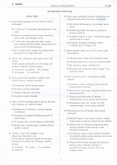

MF2021-yilgi oliy ta'lim muassasalariga kirish uchun majburiy fanlar testlari to'plami.
Ushbu to'plam 2021-yilgi oliy ta'lim muassasalariga kirish imtihonlari uchun mo'ljallangan majburiy fanlar testlarini o'z ichiga oladi. Kitob ona tili, O'zbekiston tarixi va matematika fanlari bo'yicha savollar va ularning tahlilini taqdim etadi.